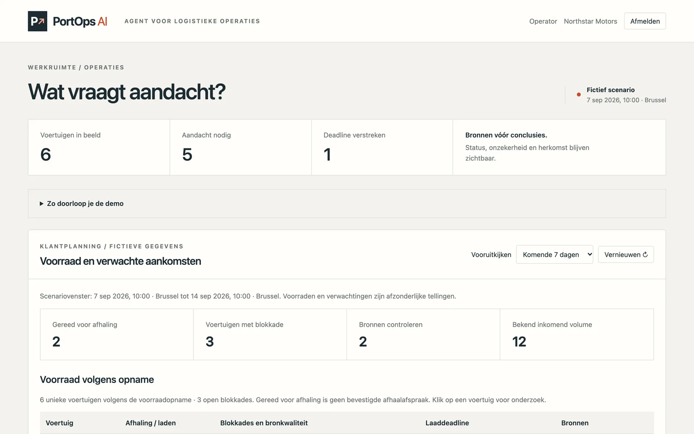
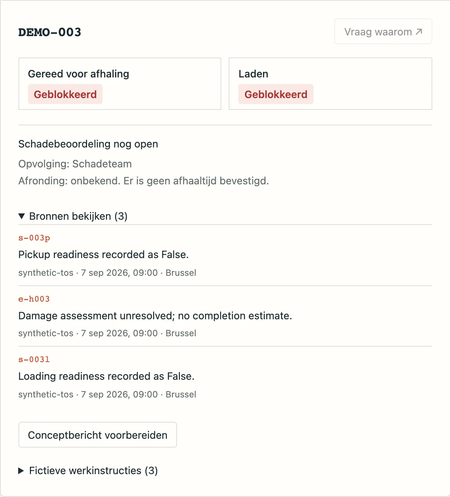
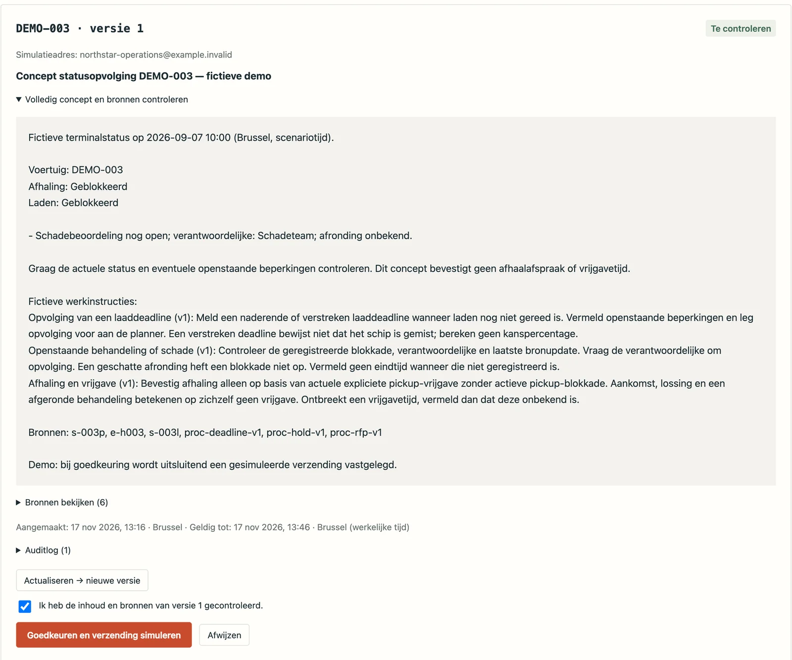
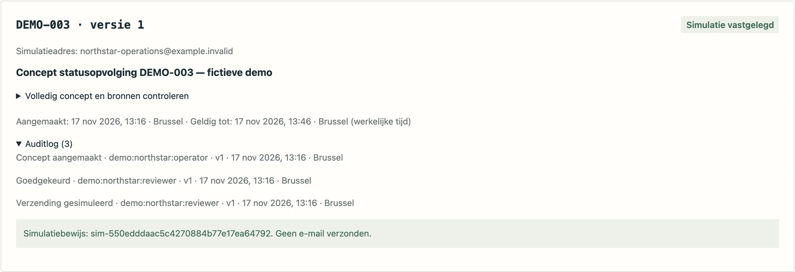
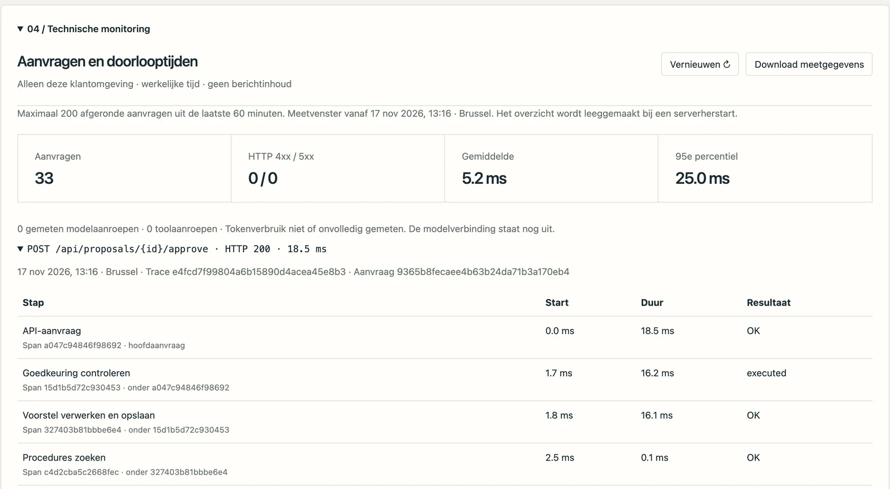

Which vehicles need attention today, and why?
PortOps answers the dispatcher's daily question for a fictional RoRo terminal. Deterministic rules decide readiness from timestamped source records; an agent can explain them with six scoped tools; and nothing is sent until a separate reviewer approves the exact draft.

Why it exists
"Ready for pickup" is a claim. It needs a source and a timestamp.
Terminal status lives in several systems that disagree. A completion estimate gets read as a release, a stale observation as current, and an AI assistant that answers fluently can hide all of that, or send a customer message nobody checked.
Readiness is computed by explicit rules: holds block, estimates never release, stale or conflicting sources are flagged for a person. The agent can only call scoped tools and must cite source IDs. Drafted messages wait for a separate reviewer and are delivered once, to a simulator, with an audit trail.
Try it · runs in your browser
Explore the attention list
These are responses recorded from a local run of the real API for customer Northstar Motors, at the fixed scenario clock. Click a vehicle to see the rule outcome per readiness type, the evidence behind it, and the matched procedures. Then try a vehicle that belongs to another customer.
Recorded API output, not a live connection: the API needs a demo token and runs locally. Procedures are fictional and in Dutch, like the operations desk.
How it works
Rules decide, the agent explains, a person approves
Deterministic readiness
Pickup and loading readiness from source records: open holds block, completion estimates never release, stale and conflicting observations go to review. No invented delay probabilities.
Six scoped agent tools
Attention, vehicle, vessel call, planning, procedure search and notification draft. A bounded model loop validates that answers cite retrieved sources.
Human approval, exactly once
A separate reviewer approves a specific version and content hash. Delivery is simulated, idempotent and written to an audit log; expired or changed drafts need a new version.
Customer isolation and monitoring
Customer scope comes from server-side claims. A reviewer-only panel shows per-request traces, durations and model usage, and exports them as JSON.
The flow, step by step
Screens
What it looks like
Captured with Playwright against a local run: an operator token drafts the message, a separate reviewer token approves it.




Evidence
What is real, and what is not
REAL Built and verified
- .NET 10 API, readiness rules, planning view and Dutch operations desk, run locally for these screenshots
- Tool-calling agent loop with scripted models in tests and source validation
- Separate reviewer identity, exact-version approval, expiry and idempotent simulated delivery
- PortOps.Contracts released as a NuGet package and consumed by Shipment Desk
SIMULATED Mocked or not built yet
- All terminal data, customers, vehicles and procedures are fictional
- No real-model run yet: the provider endpoint is not configured, so chat stays disabled in the demo
- In-memory data and local JSON proposal storage; PostgreSQL and production identity are planned
- Not affiliated with or connected to any terminal operator or TOS
Run it yourself
Run it locally
Requires the .NET SDK from global.json. No database, model account or cloud subscription.
git clone https://github.com/phlppgdfry/portops-ai
cd portops-ai
dotnet test PortOps.slnx
# generate local demo tokens: operator and a separate reviewer
export DemoAuth__Keys__northstar="$(openssl rand -hex 24)"
export DemoAuth__ReviewerKeys__northstar="$(openssl rand -hex 24)"
dotnet run --project src/PortOps.Api --launch-profile demo
# open http://localhost:5088 and sign in with one of the tokens